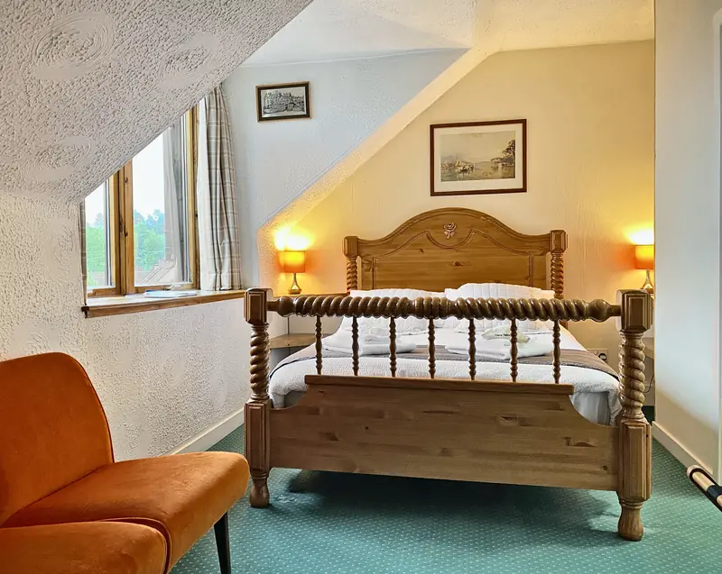
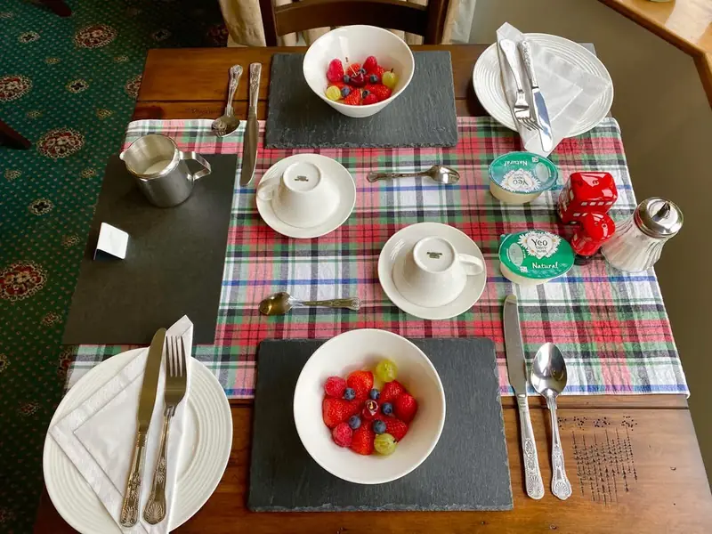
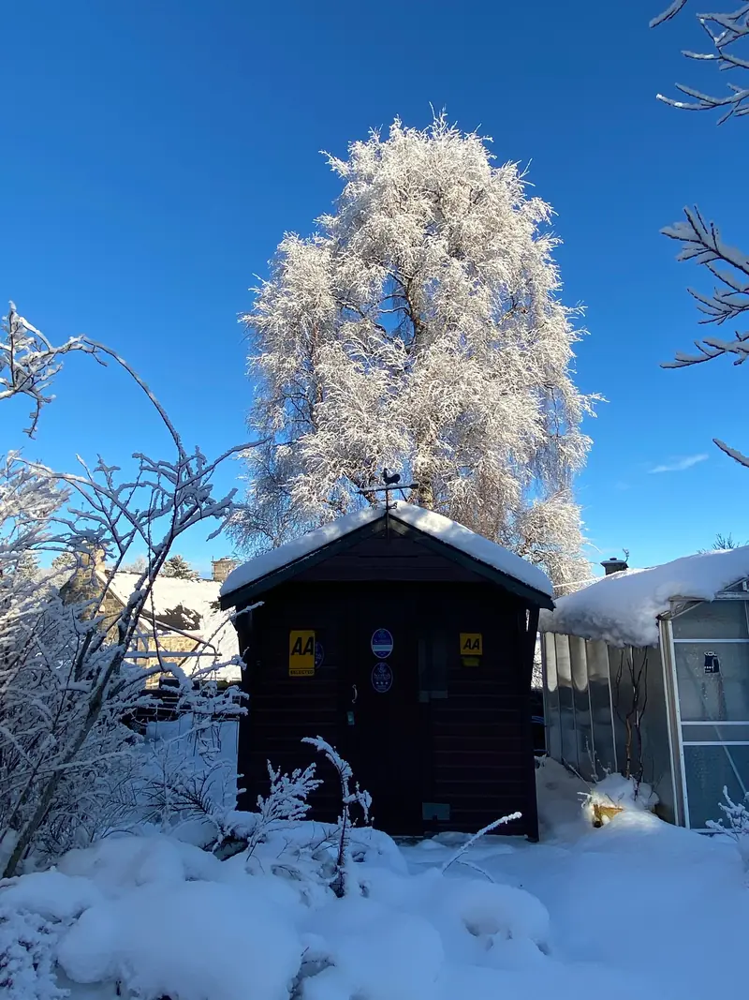
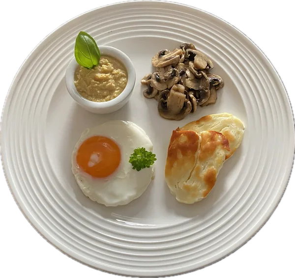
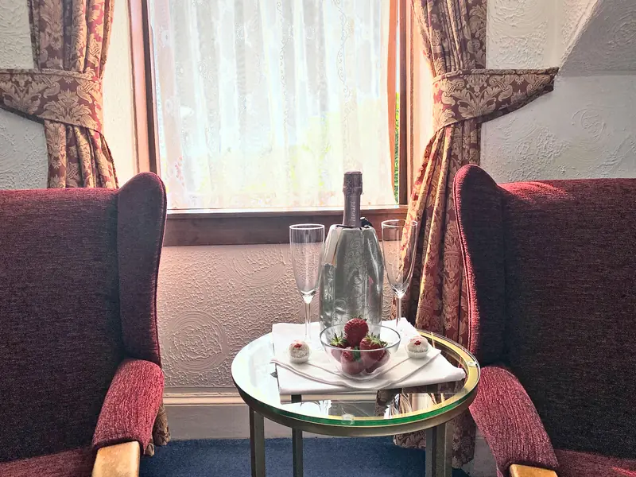

Garden Park Guest House Bed & Breakfast à Grantown-on-Spey, Cairngorms
Sarah et Daniel vous souhaitent la bienvenue au Garden Park, un Guest House chaleureux à Grantown-on-Spey. Construite en 1868 et entourée d'environ 2000 m² de jardin, la maison est à seulement trois minutes à pied de la High Street. Nous proposons un bed and breakfast confortable dans une ambiance détendue et familiale, et nous nous réjouissons de vous accueillir comme notre Hôte.
- 6chambres avec salle de bain
- Petit-déjeunerpréparé à la minute
- 3 minà pied de la High Street
- WiFi gratuitfibre optique
- Parkingprivé
- EVborne de recharge
- Green TourismGold
À propos
Bienvenue au Garden Park
Sarah et Daniel vous souhaitent la bienvenue à Grantown-on-Spey, dans les magnifiques Highlands d'Écosse, au Garden Park Guest House, élégant et chaleureux à la fois. Construite en 1868, la maison est au calme dans environ 2000 m² de jardin bien entretenu, près du golf de Grantown, du sentier le long de la Spey et des forêts de pins. La High Street, avec ses commerces familiaux, ses restaurants et ses pubs, n'est qu'à environ trois minutes à pied.
Grantown-on-Spey fait partie du Cairngorms National Park. La ville relie Strathspey et Badenoch, le Speyside, le Moray, le Nairnshire et les Cairngorms, ce qui en fait l'un des meilleurs points de départ pour un séjour confortable et un peu plus long.
- Six chambres chauffées avec salle de bain privée
- Deux chambres au rez-de-chaussée
- Chaque chambre peut aussi être réservée pour une personne
- Petit-déjeuner préparé à la minute, servi à des tables séparées
- Salon pour les Hôtes avec jeux de société et livres
- Chambres avec lit super king-size, king-size, double ou deux lits simples
- TV, thé et café et produits d'accueil offerts
- Grand parking privé, au calme et pourtant central
- WiFi gratuit, entièrement non-fumeur
Licence Home Sharing, n° HI-70000-R
Chambres
Des chambres confortables, chacune aménagée à sa façon
Les six chambres ont toutes une salle de bain privée, sont aménagées chacune à sa façon et tenues avec soin. Des lits de qualité, le chauffage central et des surmatelas chauffants vous assurent un bon sommeil. Chaque chambre a un sèche-cheveux, une TV et un choix de thés et de cafés. L'occupation simple est possible dans toutes les chambres.

Superior
MacDonald
- Lit super king-size
- Baignoire avec douche, la seule baignoire de la maison
- À l'étage



Chambre double · rez-de-chaussée
Sutherland
- Lit double
- Douche à l'italienne avec pommeau pluie et douchette
- Rez-de-chaussée

Chambre à deux lits · rez-de-chaussée
Mathieson
- Deux lits simples
- Douche avec une marche de 15 cm
- Rez-de-chaussée
Les prix varient selon la saison, la chambre et la durée du séjour, et nos prix pour les longs séjours pourraient vous surprendre agréablement. Les prix actuels s'affichent quand vous vérifiez les disponibilités.
Notre cottage
Butterfly Cottage, gîte pour deux
Notre gîte avec cuisine sur le terrain du Garden Park, pour deux adultes plus jusqu'à deux enfants de 10 ans maximum, ou un enfant de 12 ans maximum. Il est de plain-pied avec la rue, avec une douche à l'italienne, et sous le lit double surélevé il y a beaucoup de place pour les bagages. Butterfly Cottage est aussi le seul logement où nous pouvons accueillir votre chien.
Licence Secondary Letting HI-70001-R
Longs séjours, groupes et maison entière
Demandez-nous nos prix pour les longs séjours, nos offres hors saison et nos prix de groupe. Pour les fêtes de famille, les mariages et autres événements de groupe, vous pouvez aussi avoir toute la maison pour vous. Écrivez-nous et nous vous aidons volontiers à préparer votre événement dans les Highlands.
Petit-déjeuner
De bons lits et un vrai petit-déjeuner
Nous misons sur les deux choses qui comptent le plus, un bon lit et un vrai petit-déjeuner.
Chaque matin, vous choisissez sur notre carte du petit-déjeuner exactement ce que vous souhaitez. Nous préparons chaque petit-déjeuner à la demande, rien que pour vous, ce qui nous aide à éviter le gaspillage alimentaire. Nos champignons et nos tomates passent au four 90 minutes à l'avance, pour être prêts avec votre petit-déjeuner fraîchement préparé.



Pendant votre séjour
Le Wee Fancy Brügel et un vrai café
Après une longue route, personne n'a envie de ressortir. C'est pourquoi vous pouvez commander à l'avance notre Wee Fancy Brügel. Un vrai plat suisse rustique et réconfortant sur une baguette croustillante au levain cuite sur pierre, en quatre variantes. Pas un simple en-cas, mais un vrai repas pour les grandes faims.
Du lundi au samedi, à commander au moins 24 heures avant l'arrivée, uniquement pour les Hôtes du Garden Park et du Butterfly Cottage. Tous les détails se trouvent dans le PDF que nous envoyons avec votre confirmation de réservation.
Envie d'un café après une journée dehors ? Pour nos Hôtes, nous préparons Iced Coffee, Cappuccino, Latte Macchiato et Espresso.
Et si vous voulez emporter un petit bout de Garden Park chez vous, nous avons aussi quelques petits souvenirs de Sarah et Daniel, du miel des Highlands aux patères faites avec de vieux fûts de whisky.


Offres & nouvelles
Quoi de neuf au Garden Park

Trois générations. Des vacances inoubliables en Écosse.
Generation Getaway
Réunissez toute la famille pour quelques jours spéciaux dans les Highlands écossais. Réservez trois chambres pour quatre nuits, et la troisième chambre pour les enfants (de 6 à 11 ans) est entièrement gratuite.
Avec des chambres séparées, chacun a son espace. Et si papa et maman ont envie d'un peu plus d'intimité, ils peuvent même faire du Butterfly Cottage leur petit refuge. Pendant que les grands-parents créent de précieux souvenirs avec les petits-enfants, papa et maman profitent d'un moment bien mérité à deux.
Un peu plus d'espace, un peu plus de temps ensemble et des souvenirs pour toute la vie.
Minimum trois chambres et quatre nuits. Selon disponibilité. Réservation à l'avance obligatoire. Écrivez-nous un e-mail pour organiser votre Generation Getaway.
Nous écrire26 – 30 décembre 2026
Twixmas au Garden Park
Les jours entre Noël et Hogmanay. Le moment idéal pour ralentir.
3 nuits pour le prix de 2, ou 4 nuits pour le prix de 3, dans nos chambres MacDonald (Superior) ou Grant (Deluxe).
Entre Noël et Hogmanay, de toute façon, personne ne sait vraiment quel jour on est. Alors pourquoi ne pas s'échapper dans les Highlands écossais et profiter de quelques jours sans devoir être nulle part ?
De longues balades dans les Anagach Woods, puis retour au chaud dans le salon, blotti avec un bon livre ou autour d'un jeu de société près du feu. Le matin commence par un vrai petit-déjeuner, et la liste des choses à faire reste à la maison.
Pas de programme. Pas de stress. Juste une petite escapade d'hiver dans les Highlands.
Offre valable pour les séjours du 26 au 30 décembre 2026. Selon disponibilité.
Disponibilités Twixmas26 décembre 2026 – 4 janvier 2027
Hogmanay au Garden Park
Faites la fête jeudi. Prenez votre temps vendredi. Profitez du week-end.
Pourquoi rentrer vite après Hogmanay ? Venez à Grantown-on-Spey fêter le Nouvel An à la mode des Highlands. Cette année, Hogmanay tombe un jeudi, l'excuse parfaite pour transformer la fête en long week-end.
Grantown fête généralement l'événement avec une fête de rue traditionnelle sur The Square, à quelques pas de notre porte. Pas de taxi, pas de file d'attente, juste quelques minutes à pied pour retrouver un lit chaud et confortable.
Et le meilleur ? Pas besoin de partir vite vendredi matin. Profitez d'un petit-déjeuner tranquille, découvrez les Highlands en hiver et profitez pleinement du long week-end.
Fêtez Hogmanay. Faites la grasse matinée. Restez un peu plus longtemps.
Nous sommes ouverts du 26 décembre 2026 au 4 janvier 2027.
Disponibilités HogmanayLa région
Grantown-on-Spey et les Cairngorms
Fondée au XVIIIe siècle, Grantown est la capitale historique du Strathspey et une base presque parfaite dans les Highlands pour les excursions, le whisky, la nature et la côte. Depuis 2003, la ville fait partie du Cairngorms National Park, le plus grand parc national du Royaume-Uni.
Balades et faune
Les Anagach Woods et le Speyside Way commencent à quelques minutes de la porte, et nous sommes le Guest House le plus proche du sentier. Cerfs, loutres, dauphins, aigles royaux, balbuzards et martres vivent dans la région, et le centre RSPB de Loch Garten est à quelques minutes en voiture.
Whisky
Neuf distilleries et une tonnellerie en activité sur le Malt Whisky Trail, dont The Cairn, la distillerie de Grantown. Plus d'informations sur maltwhiskytrail.com.
Golf
Huit parcours tout proches, à Grantown, Carrbridge, Boat of Garten, Abernethy, Newtonmore, Kingussie, Aviemore et Craggan. Nous avons un rangement fermant à clé et un local de séchage pour les clubs et les chaussures. Conseils golf sur notre carte.
Châteaux et histoire
Ballindalloch Castle, Cawdor Castle et le champ de bataille de Culloden sont tous à moins d'une heure. Le Grantown Museum est juste au coin de la rue.
Manger dehors
Nous ne servons ni déjeuner ni dîner, mais chaque réservation reçoit un PDF avec tous les restaurants et cafés du coin. Que vous soyez végan ou amateur de viande ou de poisson, Grantown offre un grand choix, et nous partageons volontiers nos adresses préférées.
Pêche et plein air
La pêche et la chasse à l'approche peuvent être organisées avec un guide local pendant votre séjour. Équitation, randonnée à poney, observation des oiseaux, ski, snowboard et rafting sont tous à proximité. Conseils pêche sur notre carte.
Préparez votre séjour en toute simplicité
Notre carte interactive présente plus de 50 destinations choisies avec soin et des idées d'excursions toutes prêtes, réparties en 8 catégories sur 4 cartes claires et faciles à utiliser.
Découvrez la carte interactive du Strathspey & Badenoch, du Speyside, des Cairngorms et de la côte du Moray.
Ouvrir la carte interactiveDéveloppement durable
Un séjour plus durable dans les Highlands
Grantown-on-Spey est faite pour rester un peu plus longtemps. D'ici, les excursions partent dans toutes les directions comme les branches d'une étoile, vers le Speyside et ses distilleries, Aviemore et les montagnes des Cairngorms, Tomintoul, Elgin, Nairn et la côte du Moray, et Inverness, tout à moins d'une heure. Vous défaites vos valises une seule fois et passez vos journées à découvrir plutôt qu'à faire vos bagages et à conduire.
Nous travaillons étroitement avec Green Tourism et avons leur distinction Gold. Depuis la saison 2024, des panneaux solaires sur les côtés sud et sud-est de la maison alimentent en partie le Garden Park, et nous avons remplacé tous les réservoirs d'eau. Si vous roulez en voiture électrique, vous pouvez la recharger à notre borne avec l'application Tap Electric. Nous avons aussi notre propre jardin d'herbes aromatiques et un jardin fleuri qui plaît aux abeilles, nous achetons local quand nous le pouvons, limitons les emballages et les déchets et nettoyons à la vapeur quand c'est possible.
Pourquoi nous conseillons de rester plusieurs nuits
Chaque nuit supplémentaire, c'est une lessive de draps et de serviettes en moins. Cela aide à économiser l'eau, l'énergie et la lessive, et vous laisse plus de temps pour découvrir Grantown-on-Spey et les Cairngorms au lieu de passer en coup de vent.

Énergie solaireNos propres panneaux sur le toit, côtés sud et sud-est, depuis 2024.
Borne de recharge sur placeRechargez votre voiture à notre borne avec l'application Tap Electric.
Green Tourism, GoldPartenaire évalué par Green Tourism Ltd.
Bon à savoir
Tout ce qu'il faut savoir avant de réserver
Pas de surprises, pas de petites lignes cachées dans un PDF. S'il y a quelque chose à discuter, appelez-nous ou écrivez-nous simplement.
Périodes d'ouverture
Nous sommes ouverts de mars à octobre, et du 26 décembre au 4 janvier pour Noël et le Nouvel An. Le reste du temps, de novembre à février, la maison est fermée, car notre vieille maison en granit met longtemps à se chauffer.
Sur demande, nous pouvons ouvrir la maison en hiver pour des groupes d'au moins six personnes restant au minimum trois nuits.
Réservation et paiement
Les réservations sont confirmées par un acompte correspondant à la première nuit par chambre. Nous acceptons les espèces (GBP), Mastercard et Visa, les virements et les liens de paiement Stripe. Le paiement sans contact est aussi possible.
Arrivée et départ
L'arrivée se fait entre 16 h et 19 h, le départ avant 10 h. Chaque jour, vous choisissez votre petit-déjeuner et l'heure sur notre carte du petit-déjeuner.
Annulation
Si vous annulez 14 jours ou plus avant l'arrivée, les frais d'annulation sont de £14 par chambre.
Si vous annulez entre 3 et 13 jours avant l'arrivée, les frais d'annulation sont de £50 par chambre.
Si vous annulez moins de 3 jours avant l'arrivée, les frais d'annulation sont de 75% du montant total de la réservation.
Si vous ne venez pas ou réduisez votre réservation après la date d'arrivée, le montant total de la réservation est facturé.
Pour les réservations faites plus de 4 jours avant l'arrivée, un acompte de la première nuit est dû, et le solde 9 jours avant l'arrivée. Pour les réservations de plus de £1,000, l'acompte est de 40%. Les réservations faites 4 jours ou moins avant l'arrivée sont payées en totalité et non remboursables. Nous recommandons vivement une assurance voyage.
Accessibilité
La maison est légèrement surélevée, à environ 30 mètres de la route. On accède à l'entrée par un chemin en pente douce ou par 12 marches basses. La maison n'est pas accessible en fauteuil roulant.
Les hôtes avec un déambulateur ou une aide à la marche peuvent accéder au rez-de-chaussée, et nous recommandons la chambre Sutherland, avec douche à l'italienne. La chambre Mathieson est aussi au rez-de-chaussée, mais sa douche a une marche de 15 cm.
Chiens
Vous voyagez avec votre chien ? Il est le bienvenu au Butterfly Cottage, où toute la famille a de la place pour se sentir chez soi. Un supplément de £39 s'applique par réservation et par semaine.
Randonneurs, cyclistes et golfeurs
Local de séchage et rangement fermant à clé sur place, et nous sommes le Guest House le plus proche du Speyside Way. Le transport des bagages jusqu'à votre prochain hébergement peut être organisé, demandez-nous simplement avant votre arrivée. Les groupes jusqu'à 14 personnes sont les bienvenus sur demande.
Enfants
Les enfants à partir de 8 ans sont les bienvenus. Les enfants jusqu'à 15 ans qui partagent votre chambre bénéficient d'un tarif réduit.
Confort
Chaque chambre dispose de thé et café offerts, de produits d'accueil, d'une TV et d'un sèche-cheveux. Vous êtes les bienvenus dans notre salon pour les Hôtes, où vous trouverez des jeux de société, des livres et des informations sur la région. Les jours plus frais, le poêle à bois rend la pièce chaude et douillette.
Galerie
Un coup d'œil dans la maison









Qui sommes-nous
Sarah, Daniel et Lucy
Sarah et Daniel se réjouissent de vous accueillir au Garden Park. Nous vous aidons volontiers avec des idées sur la région, des conseils pratiques et nos adresses préférées, pour que vous profitiez au mieux de votre séjour dans les Highlands.

Et Lucy ? Notre dalmatienne vit avec nous dans la partie privée de la maison et ne vient que très rarement dans le Guest House. Si vous voulez faire sa connaissance, demandez-nous, elle viendra volontiers vous dire bonjour.
Nous parlons anglais, allemand, suisse allemand et italien.
Avis des Hôtes
Ce que disent nos Hôtes
5/ 5
Sur plus de 240 avis vérifiés · tous les lire
“Spotlessly clean, peaceful location just a very short walk to facilities. Host very welcoming and helpful.”
“The breakfast was first-class, the hosts were welcoming and friendly.”
„Würden euch jeder Zeit weiter empfehlen. Es waren schöne Tage, die wir sehr genossen haben.“
„Wir vermissen euer Frühstück mit der tollen Auswahl und dem selbstgebackenen Brot. Und eure Herzlichkeit …“
 Traveller Review Award 2026Booking.com, 10 sur 10.
Traveller Review Award 2026Booking.com, 10 sur 10.
Réservez directement avec Sarah et Daniel
En réservant directement, il n'y a pas de commission de plateforme, et vous traitez directement avec nous.
DisponibilitésFAQ
Les questions de nos Hôtes
Pourquoi Grantown-on-Spey est-elle une si bonne base pour explorer les Highlands ?
Grantown est située au centre de plusieurs régions. Les clients peuvent facilement faire des excursions en étoile vers Speyside, les Cairngorms, la côte de Moray, la région d'Inverness, Strathspey et Aberdeenshire. De nombreux sites sont accessibles en 20 à 50 minutes. Chaque jour peut offrir des paysages et des expériences complètement différents. Envie de quelques idées pour préparer votre séjour ? La carte interactive de Sarah et Daniel peut vous être d'une grande aide.
Peut-on aller à pied aux restaurants et aux commerces ?
Oui. Garden Park se trouve dans une rue calme. Le centre-ville est à environ 3 minutes à pied. Tous les restaurants sont accessibles en 1 à 10 minutes de marche. Plusieurs sont à moins de 4 minutes.
À quelle distance se trouve Inverness de Grantown-on-Spey ?
Environ 50 minutes en voiture, via Nairn ou via l'A9. Les transports en commun sont aussi disponibles, des bus réguliers relient Grantown-on-Spey et Inverness.
Proposez-vous des options de petit-déjeuner végétalien ?
Oui. Des options végétariennes et végétaliennes fraîches sont disponibles tous les jours.
Peut-on faire le Speyside Malt Whisky Trail en une journée ?
Bien sûr, on peut faire le Speyside Malt Whisky Trail en une journée. La vraie question est de savoir si vous vous en souviendrez le lendemain 😄 Entre les nombreuses distilleries, centres d'accueil et dégustations, le temps file. Notre conseil est de visiter moins de distilleries et de mieux profiter de chacune. Vous les trouverez toutes sur notre carte Speyside Distilleries. Daniel propose aussi, sur demande, un service de chauffeur pour un maximum de 4 personnes. Comme les dates se remplissent vite, surtout en haute saison, il est recommandé de réserver au moins 6 semaines à l'avance.
Voit-on vraiment des dauphins depuis la côte de Moray ?
Oui, vraiment, et ils n'ont jamais fait payer l'entrée ! Le meilleur endroit est Chanonry Point près de Fortrose, où l'on aperçoit régulièrement des grands dauphins, surtout 1h30 à 2h après la marée basse. Apportez des jumelles et soyez patient, la récompense en vaut la peine.
Où trouver le site officiel du gouvernement pour demander l'ETA britannique ?
Pour éviter les sites frauduleux de tiers ou des frais de traitement inutiles, ne faites votre demande que via les canaux officiels du gouvernement britannique. Vous pouvez le faire en ligne directement sur le site officiel gov.uk/eta/apply, ou via l'application officielle « UK ETA » (App Store et Google Play), qui permet de scanner facilement la puce biométrique de votre passeport et votre visage. Sachez que la demande officielle d'ETA coûte £20. Vérifiez toujours que l'adresse du site se termine exactement par .gov.uk, car des sites indépendants ressemblent souvent aux pages officielles mais facturent d'importants frais cachés.
Où se trouve le meilleur whisky d'Écosse ?
Qui sait ? Ce n'était pas très drôle, n'est-ce pas ? 😉 La vérité, c'est que personne ne peut répondre à cette question. L'Écosse compte plus de 140 distilleries et chacun a des goûts différents. Vous adorez peut-être un whisky insulaire tourbé, ou vous débutez tout juste dans le whisky. Dans ce cas, le Speyside est l'un des meilleurs endroits pour commencer. Pourquoi ne pas séjourner chez nous et explorer plus de 50 distilleries à travers le Speyside et le Strathspey ? Une merveilleuse aventure pour les amateurs de whisky comme pour les futurs amateurs. Et si le gin vous plaît davantage, vous avez de la chance, car les Cairngorms et les environs produisent aussi quelques excellents gins.
Du gin dans les Cairngorms et le Speyside ?
Oui, la région produit un gin excellent, primé à l'international. Kinrara, par exemple, a remporté le titre « World's Best Signature Botanical » aux World Gin Awards 2025 avec son Caper Artist Edition. Ou encore Glenrinnes, avec sa distillerie moderne et sa certification 100 % bio. Et d'ailleurs, Kinrara continue sur sa lancée en 2026 et remporte le titre « World's Best Gin Design » aux World Drinks Awards de Londres.
Plus de questions et de réponses sur notre carte interactive.
Contact
Nous trouver
Garden Park Guest House2 Woodside Avenue
Grantown-on-Spey
PH26 3JN, Scotland
+44 1479 873235
relax@garden-park.co.uk
what3words include.milky.baths
Venir chez nous
Inverness et la côte du Moray sont à environ 50 minutes en voiture. Que vous veniez en voiture, en ferry ou en train, ou que vous vous déplaciez sans voiture en bus et en taxi, vous trouverez tout sur notre carte interactive.
Venir à Grantown-on-Spey